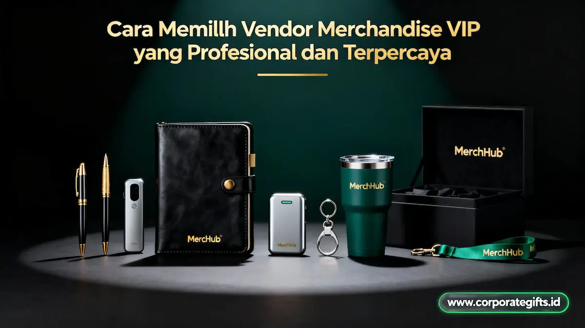

Corporate Gifts ID - Vendor merchandise VIP terpercaya adalah mitra strategis yang mampu memproduksi corporate gift eksklusif dengan mutu material premium, teknik produksi presisi, dan kepatuhan jadwal distribusi, sekaligus memahami bahwa cenderamata tersebut mencerminkan marwah dan reputasi brand korporat. Kesalahan memilih vendor dapat membuat suvenir eksklusif gagal memancarkan wibawa profesional, kendati anggaran yang dialokasikan tergolong besar.
Poin Kunci Memilih Vendor Merchandise VIP:
- Reputasi & Portofolio Nyata: Vendor VIP terpercaya wajib memiliki rekam jejak kerja sama dengan instansi korporat kredibel dan testimoni yang dapat diverifikasi.
- Konsultasi Desain Komprehensif: Tidak sekadar menyodorkan katalog, melainkan memberi masukan artistik terkait pemilihan material, proporsi logo, dan teknik kustomisasi subtil.
- Konsistensi Sampel Fisik: Wajib menyediakan prototype fisik utuh (pre-production sample) sebelum lini produksi massal dimulai.
- Transparansi Kontrak & Timeline: Memiliki lembar jadwal kerja (timeline sheet) jelas berkisar 2-4 minggu dengan klausul ganti rugi barang cacat.
- Jaminan Purnajual: Garansi penggantian unit rusak tanpa prosedur rumit serta penyimpanan master file desain untuk kelancaran repeat order.
Oleh sebab itu, menyeleksi vendor merchandise perusahaan bukan semata-mata mencari banderol harga termurah di pasaran, melainkan menemukan partner kolaborasi jangka panjang yang dapat dipercaya sejak fase perumusan konsep hingga paket mendarat di tangan penerima VIP.
Mengapa Pemilihan Vendor Merchandise VIP Sangat Krusial
Konsep desain paling mewah sekalipun dapat berujung mengecewakan apabila dieksekusi oleh workshop yang tidak memenuhi kualifikasi. Ketidaktepatan reproduksi warna logo, bahan baku tiruan yang mudah rusak, hingga keterlambatan waktu serah terima bukanlah sekadar masalah teknis operasional, melainkan ancaman langsung terhadap kredibilitas bisnis Anda di mata para pemangku kepentingan.
Vendor yang profesional bertindak sebagai konsultan cenderamata yang mampu menerjemahkan identitas korporat ke dalam bentuk fisik yang berkelas. Mereka mengerti sepenuhnya nilai psikologis dan emosional yang terkandung dalam setiap bingkisan apresiasi eksekutif.
Ciri Vendor Merchandise VIP yang Profesional dan Dapat Dipercaya
Terdapat sejumlah indikator fundamental yang membedakan vendor merchandise VIP berstandar tinggi dari konveksi souvenir grosir konvensional:
1. Memiliki Portofolio dan Klien Kredibel
Vendor berpengalaman tidak akan ragu menunjukkan arsip dokumentasi proyek yang pernah mereka tangani. Mulai dari institusi perbankan, BUMN, universitas ternama, hingga konferensi internasional. Telaah bagaimana ketelitian mereka dalam menyelesaikan pesanan yang spesifikasinya serupa dengan kebutuhan Anda.
Ciri vendor yang memiliki rekam jejak kuat:
- Menampilkan dokumentasi visual resolusi tinggi dari produk nyata yang telah diproduksi.
- Mencantumkan testimoni autentik dan logo perusahaan mitra dengan izin resmi.
- Mampu menunjukkan studi kasus penanganan kendala produksi skala massal.
- Memiliki ulasan publik positif pada profil bisnis Google maupun jejaring profesional.
2. Menyediakan Layanan Konsultasi Desain
Penyedia jasa cenderamata VIP yang berdedikasi tidak akan membiarkan Anda memilih produk tanpa bimbingan teknis. Mereka secara aktif memberi masukan perihal kompatibilitas media cetak, ketahanan material, hingga penempatan logo agar tetap terlihat eksklusif tanpa kesan terlalu mencolok.
Jika perwakilan vendor hanya menjawab dengan kalimat singkat seperti "Semua ada di katalog, silakan tentukan sendiri", itu menandakan pola kerja transaksional yang berisiko mengabaikan esensi branding eksklusif.
3. Memiliki Kualitas Produksi yang Konsisten
Kemewahan tidak hanya ditentukan oleh mahalnya harga material, melainkan oleh presisi dan keseragaman setiap unit yang diproduksi. Workshop terstandar memiliki prosedur Quality Control (QC) bertingkat guna memastikan tidak ada produk cacat yang lolos ke tahap akhir.
Tanda sistem produksi berkualitas tinggi:
- Menyediakan ruang sampel fisik (sample room) atau dummy cetak presisi sebelum pesanan disetujui.
- Mengutamakan material premium seperti kulit nabati, kayu solid, logam paduan, hingga bambu ramah lingkungan.
- Menyampaikan laporan berkala berupa foto atau video progres pengerjaan untuk pesanan dalam kuantitas besar.
4. Fleksibel dalam Kustomisasi dan Branding
Merchandise level VIP menuntut personalisasi tingkat lanjut yang melampaui teknik sablon biasa. Vendor yang andal menyediakan opsi variatif seperti laser engraving pada permukaan logam, blind deboss pada cover kulit, hot foil stamping emas/perak, hingga tone-on-tone branding yang menawan.
Mereka memahami filosofi branding elegan, yaitu menyematkan identitas visual secara halus dan harmonis sehingga suvenir tersebut benar-benar dikenakan dan dibanggakan oleh sang penerima dalam kehidupan sehari-hari.
5. Memberikan Jadwal Produksi dan Pengiriman yang Jelas
Tingkat kedisiplinan vendor tecermin dari komitmen mereka terhadap tenggat waktu. Sejak tahap awal, vendor profesional akan merinci jadwal kerja yang transparan, mencakup:
- Estimasi waktu pembuatan mockup digital dan penyesuaian artwork (H+1 s/d H+3).
- Durasi pembuatan dan persetujuan sampel fisik (H+3 s/d H+7).
- Masa perakitan dan produksi massal di bengkel (2 hingga 3 minggu).
- Jadwal pengepakan akhir dan estimasi kedatangan kargo logistik di kantor pemesan.
6. Menawarkan Layanan Purna Jual
Komitmen vendor tidak berakhir begitu resi ekspedisi dibagikan. Vendor terpercaya selalu siap merespons jika terjadi kerusakan saat transit atau terdapat item yang tidak sesuai dengan approved sample.
Standar layanan purnajual yang wajib dimiliki mencakup:
- Garansi penggantian langsung tanpa perdebatan yang mengulur waktu.
- Pengarsipan digital untuk seluruh master layout dan spesifikasi warna demi mempermudah reorder di masa depan.
- Dukungan paking kayu pelindung ekstra untuk pengiriman jarak jauh antarpulau.

Inspeksi detail hasil laser engraving dan kerapian kemasan gift box eksklusif sebelum pengiriman ke klien korporat.
Langkah-Langkah Memilih Vendor Merchandise VIP Secara Tepat
Agar proses pengadaan terhindar dari kerugian finansial dan kekecewaan, ikuti lima langkah sistematis berikut:
- Tentukan Tujuan dan Alokasi Anggaran: Tetapkan sejak awal apakah merchandise ditujukan untuk apresiasi direksi, loyalty gift nasabah prioritas, atau cenderamata penandatanganan MoU. Tentukan estimasi batas anggaran per paket.
- Lakukan Riset Rekam Jejak Digital: Manfaatkan penelusuran daring untuk memeriksa legalitas, alamat workshop fisik, dan keaslian portofolio. Hindari vendor perantara lepas yang tidak memiliki entitas usaha resmi atau alamat workshop yang jelas.
- Bandingkan 2 hingga 3 Penawaran Resmi (RFQ): Mintalah proposal rincian harga (RAB) dari vendor terpilih. Periksa apakah rincian biaya mencakup biaya pelat cetak, kemasan hardbox, dan ongkos kirim secara transparan.
- Wajib Minta dan Uji Sampel Fisik: Sebelum merilis persetujuan produksi massal, pastikan sampel fisik telah dipegang langsung. Periksa presisi jahitan, kekuatan engsel, kehalusan tepian akrilik, dan ketahanan cat.
- Periksa Klausul Kontrak Kerjasama (SPK): Pastikan seluruh poin kesepakatan tertulis tegas dalam dokumen resmi, termasuk batas toleransi keterlambatan dan mekanisme ganti rugi.
Jenis Vendor Merchandise VIP Berdasarkan Spesialisasi
Memilih workshop yang memiliki lini fokus sesuai jenis barang akan menghasilkan output yang jauh lebih rapi dan efisien. Berikut klasifikasi vendor souvenir custom VIP di Indonesia:
| Jenis Vendor | Fokus Utama Produk | Kesesuaian Penggunaan |
|---|---|---|
| Vendor Corporate Gift Premium | Desk set kantor, executive gift set kulit, tumbler vacuum flask, pena logam | Apresiasi komisaris, mitra strategis B2B, dan seremonial korporat |
| Vendor Souvenir Teknologi | Powerbank wireless, Bluetooth speaker kayu, flashdisk OTG berkecepatan tinggi | Startup teknologi, event pameran MICE, dan nasabah generasi digital |
| Vendor Lifestyle Merchandise | Jam tangan custom ukir, clutch kulit sapi asli, premium polo shirt | Komunitas bisnis premium, hospitality mewah, dan gathering internal direksi |
| Vendor Eco-Friendly Merchandise | Peralatan makan serat bambu, notebook kertas daur ulang, tote bag rami | Perusahaan yang mengedepankan prinsip keberlanjutan dan standar ESG |
Kesalahan Umum Saat Memilih Vendor Merchandise VIP
Dalam pengadaan cenderamata level eksekutif, beberapa kekeliruan yang kerap terjadi antara lain:
- Tergiur Harga Termurah: Menekan biaya secara berlebihan kerap berujung pada penggunaan bahan imitasi cepat terkelupas yang merusak citra profesional perusahaan.
- Melewatkan Uji Sampel Fisik: Mengandalkan preview digital di layar sering kali menghasilkan persepsi warna yang berbeda drastis dengan hasil cetak nyata.
- Menyepelekan Kualitas Kemasan (Packaging): Kemasan adalah kesan pertama yang dinilai penerima. Hardbox yang tipis atau penyok seketika melunturkan nilai isi di dalamnya.
- Tidak Membuat Surat Perjanjian Tertulis: Ketiadaan dokumen SPK membuat panitia kesulitan mengajukan klaim jika terjadi keterlambatan atau ketidaksesuaian spesifikasi.
Tanda Vendor Merchandise VIP Tidak Profesional
Segera batalkan rencana kerja sama apabila Anda menemukan tanda-tanda berikut pada tahap negosiasi:
- Menolak memperlihatkan dokumentasi fisik atau referensi proyek terdahulu.
- Respon layanan pelanggan sangat lambat dan berbelit-belit saat ditanya perihal spesifikasi teknis.
- Tiba-tiba menaikkan harga atau menambah biaya tersembunyi setelah penawaran awal diajukan.
- Tidak bersedia memberikan kepastian jadwal kerja (production timeline).
- Menolak menandatangani perjanjian legalitas resmi berbadan hukum.
Kesimpulan
Memilih partner penyedia cenderamata eksekutif yang kredibel berarti melindungi martabat dan nama baik perusahaan Anda di mata para pemangku kepentingan. Vendor terbaik bukan hanya mereka yang mampu memproduksi barang berpenampilan menarik, melainkan yang memahami nilai identitas merek, disiplin terhadap jadwal, serta bertanggung jawab penuh atas setiap produk yang diserahkan.
Melalui proses seleksi yang terstruktur, komunikasi terbuka, dan kontrak kerja sama yang berkepastian hukum, agenda pengadaan cenderamata VIP perusahaan Anda akan berjalan lancar dan meninggalkan impresi profesional yang mendalam.
FAQ Seputar Vendor Merchandise VIP

Ditulis oleh: Arinda Zakia
Senior Corporate Gifting SpecialistPraktisi pengadaan cenderamata korporat dan kurator merchandise eksekutif di CorporateGifts.ID, berpengalaman merancang gift set VIP untuk klien perbankan, BUMN, dan multinasional di Indonesia.
Lihat Profil Lengkap & Panduan Lainnya